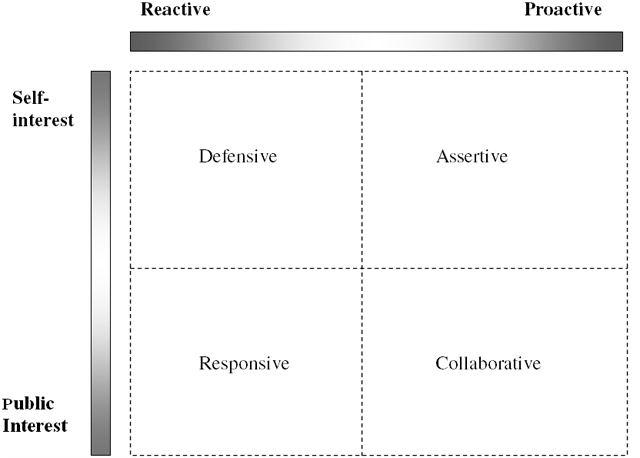

In order to understand how public relations should be best managed, we propose a model of contingency, mixed-motive, situational strategies based on the dimensions of (1) reactive versus proactive, and (2) self interest versus public interest. Each dimension should be seen as a continuum of more reactive/more proactive and more self-interest/more public interest rather than either/or. The interaction of these two dimensions results in four distinct approaches: defensive, responsive, assertive, and collaborative (see Figure 7.4 "The Contingency Approach to Public Relations Strategy"). We will discuss each strategic approach in detail in the following pages.
Figure 7.4 The Contingency Approach to Public Relations Strategy
Probably the two most common terms used to describe current public relations efforts are reactive and proactive. Organizations are reactivePublic relations efforts that deal with existing problems that need correcting. when they have to deal with existing problems that need correcting and are proactivePublic relations efforts that are taken to prevent or avert problems before they develop. when steps are taken to prevent or avert problems before they develop. As Liechty has noted, some public relations work is necessarily reactive because practitioners “often lack either sufficient time or freedom to respond with collaborative tactics.”Liechty (1997), p. 48. We note that resources and the support level of the CEO might pose further constraints to public relation’s ability to be collaborative.
However, organizations can take different approaches to reactive public relations, often still holding and enhancing relationships if the strategic response is carefully formulated. For example, comparing the actions of Johnson & Johnson in the Tylenol case and Exxon’s response to the Valdez oil spill illustrates how companies can differ in their response to products that present a danger to their consumers. Johnson & Johnson, although victims of malicious tampering, voluntarily pulled its product from the shelves of stores in order to ensure the safety of the customer. Exxon, on the other hand, was slow to accept responsibility and to show its concern to the media and the general public. In the end, even though Exxon spent billions of dollars more than Johnson & Johnson, one came out looking like a hero while the other’s reputation has become tainted as a villain to the environment. So even though both organizations had to use reactive public relations, their approaches could not have been more divergent.
Forward-thinking organizations often practice proactive public relations. This term means that rather than fighting change, which often proves to be a losing battle, or simply accommodating themselves to change, organizations attempt to influence change by becoming involved in the public policy process. Thus, an organization can attempt to influence public opinion with respect to specific social issues or with regard to social issues of concern to society, and attempt to influence the legislative and regulatory process with regard to specific laws and regulations.
Some organizations proactively conduct research to identify possible issues that could affect the organization and launch persuasive public information campaigns as attempts to influence public opinion and eventually the outcome of issues. Other organizations seek to collaborate with their concerned constituencies to find solutions that incorporate the interests of all parties involved and that might require change on the part of the organizations. Both of these approaches work to help prevent problems, but they use different means as preventative measures. What appears to separate how these organizations act lies in whether they are concerned primarily about their self-interests or if they also are concerned about the interests of their publics.
According to the capitalist ideal, the free market economy is dependent on self-interest as a powerful motivating factor that elicits more energy and creativity than would the pursuit of someone else’s interests. From a financial perspective, self-interest is defined as maximizing one’s return on investment (ROI). As Buchholz explains,
Entrepreneurs are expected to maximize profits, investors to maximize their returns in the stock market, and sellers of labor are expected to obtain the most advantageous terms to themselves. On the consumption end of the process, consumers are expected to maximize the satisfaction to themselves through their purchases of goods and services on the marketplace.Buchholz (1989), p. 79.
Although not all social organizations have the goal of making money, even nonprofit organizations are motivated by the self-interest of survival. Therefore, all public relations approaches will be motivated by some form of self-interest.
Public interest is more difficult to define and defend. Fitzpatrick and Gauthier suggest that
serving the public interest simply requires public relations professionals to consider the interests of all affected parties and make a committed effort to balance them to the extent possible while avoiding or minimizing harm and respecting all of the persons involved.Fitzpatrick and Gauthier (2001), p. 205.
Decisions are almost never made with pure self-interest or pure public interest as their motivations. Often decisions are made with collaborative interests, which allows them to “be represented as in the public interest, even if their ultimate motivation is the financial benefit of the company.”Fitzpatrick and Gauthier (2001), p. 197. At the same time, Buchholz acknowledges that those in position to define the public interest can never divorce themselves from their own self-interests.
The defensive approachA reactive behavior that acts primarily in the self-interest of an organization. It typically consists of planned, one-way communication. is a reactive behavior that acts principally in the self-interest of the organization. The responsive approachA reactive behavior that considers its impact on an organization's stakeholders. is a reactive behavior that considers its impact on stakeholders. The assertive approachA proactive behavior that promotes an organization's self-interests in an attempt to control that organization's environment. Bernays referred to this asymmetrical approach to public relations as the engineering of consent. is proactive behavior that promotes self-interests in an attempt to control an organization’s environment. And, the collaborative approachA proactive behavior that uses dialogue to create mutually beneficial solutions that incorporate the interests of both the organization and its stakeholders. Used by organizations to build consent and support among its publics. is proactive behavior that uses dialogue to create mutually beneficial solutions that incorporate the interests of both the organization and its stakeholders.
The primary form of communication for the defensive approach is planned one-way communication. The defensive approach uses the tools of publicity and public information to disseminate “facts” and “educate” publics about an organization’s actions or policies in response to criticisms or crises. Sometimes a defensive approach is the only one that can be used because the organization is falsely accused of certain behaviors or standards; defending itself from such erroneous information is a legitimate and logical recourse. The defensive approach becomes a necessary response to certain situations and problems, but it is not an ideal approach if used exclusively for all situations. If public relations is relegated to practicing primarily the defensive approach in an organization, then its function is limited to damage control that results in the loss of credibility and trust with valuable publics. It is predictable that public relations professionals who are confined to practicing this approach are often representative of communication technicians and have very little power or participation in the decision-making process of an organization.
The responsive approach is also used to react to situations, but in this approach an organization acts in a fashion that demonstrates its concerns for society. This approach has become more prominent as organizations have lost the trust and confidence of their stakeholders. Social responsibility has become a rallying cry for consumer and environmental advocates. Some organizations learned that certain crises were better resolved when communication and actions showed remorse and concern toward publics and toward society. These organizations would also try to shift into a more proactive mode by identifying actions they were taking to prevent such crises in the future.
The much-documented Tylenol case set the standard for this approach. The introduction of the tamper-proof seals revolutionized product packaging. Kathie Lee Gifford’s response to reports that her clothing line was using “sweatshops” is also representative of this approach. Gifford and her husband went to one of the shops with hands full of dollars to offer to the workers and pledging to campaign against sweatshops and to allow independent monitors to visit factories that made her clothes. Although skeptics could easily argue that she did this to preserve her business rather than as a response to her conscience, it is not easy to analyze motive. The responsive approach in these cases was apparently more effective than a defensive approach would have been.
Bernays’s “Torches of Freedom” publicity stunt in the 1920s is a good example of the assertive approach. Bernays helped George Washington Hill and the American Tobacco Company break down the social taboo that discouraged women from smoking in public by having young debutantes, or paid representations of such figures, walk in the Easter parade smoking Lucky Strike cigarettes. Using publicity and Freudian psychology of attitude change, Bernays was able to condition the marketplace to accept female smokers and thereby increase the market for Lucky Strike. Bernays played an important role in the development of this asymmetrical approach as he promoted public relations as the “engineering of consent.” Organizations that use this approach see public relations as an asymmetric strategic function that helps control the external environment.
Many corporations have used the assertive approach to shape marketing, social, and regulatory conditions that would favor them. Sometimes the assertive approach is used to the detriment of society’s best interests. An example of an assertive measure that had a negative social impact is the criminal conspiracy by General Motors (GM), with Firestone Tires and Standard Oil of California, to eliminate the electric streetcar system in Los Angeles. Los Angeles had one of the best electric streetcar systems in the country before GM bought it out and converted it to GM buses that used Firestone tires and Standard Oil gasoline. In 1947 the Federal government found GM and its coconspirators guilty of criminal actions and fined them $5,000.United States v. National City Lines, Inc., et al. Since then, the city of Los Angeles, with support of federal grants, has spent billions of dollars on building an electric subway system to reduce pollution and public transportation problems. At the same time, there is an abundance of prosocial examples of the assertive approach, such as the civil rights movement and health awareness campaigns to reduce the risk of heart disease, cancer, diabetes, and lung diseases.
The collaborative approach is, or should be, used by organizations when building consent and support. Collaboration relies on an organization’s ability to show how its actions will benefit or not harm its stakeholders. A collaborative approach requires interaction with the publics that invites participation and involvement along the conditions of honest and genuine dialogue that respects the rights of each side and is nonmanipulative in intent or action. Collaboration emphasizes that the publics who are affected by or who can affect the action of an organization decision should participate in the decision-making process. It involves cooperation to develop equilibrium between the interests of the two parties. As Murphy noted, conflict always exists, but how the conflict is handled is usually on a continuum ranging between pure competition (a zero-sum approach) and a pure coordination approach that attempts to obtain a mutually beneficial outcome (win-win approach).Murphy (1991), pp. 115–131. The collaborative approach uses the coordination motive to negotiate outcomes that will help strengthen relationships with key stakeholders, helping both an organization’s self-interest and relationship maintenance.